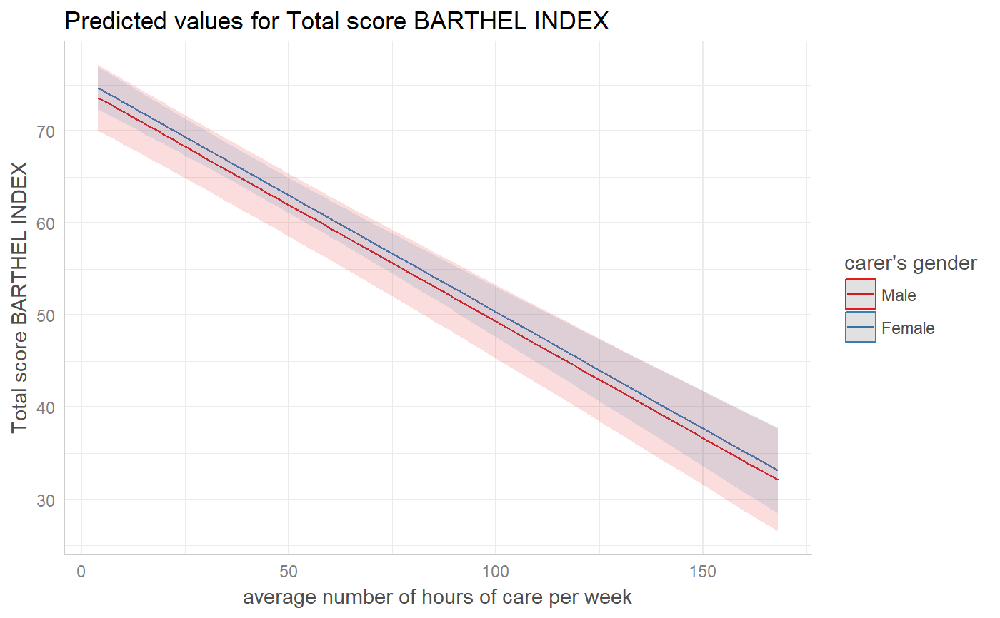

ggeffect() computes marginal effects of model terms. It internally
calls Effect and puts the result into tidy data
frames. eff() is an alias for ggeffect().
ggeffect(model, terms, ci.lvl = 0.95, x.as.factor = FALSE, ...) eff(model, terms, ci.lvl = 0.95, x.as.factor = FALSE, ...)
| model | A fitted model object, or a list of model objects. Any model that is supported by the effects-package should work. |
|---|---|
| terms | Character vector with the names of those terms from |
| ci.lvl | Numeric, the level of the confidence intervals. For |
| x.as.factor | Logical, if |
| ... | Further arguments passed down to |
A tibble (with ggeffects class attribute) with consistent data columns:
xthe values of the model predictor to which the effect pertains, used as x-position in plots.
predictedthe predicted values, used as y-position in plots.
conf.lowthe lower bound of the confidence interval for the predicted values.
conf.highthe upper bound of the confidence interval for the predicted values.
groupthe grouping level from the second term in terms, used as grouping-aesthetics in plots.
facetthe grouping level from the third term in terms, used to indicate facets in plots.
The results of ggeffect() and ggpredict() are usually (almost)
identical. It's just that ggpredict() calls predict(), while
ggeffect() calls Effect to compute marginal
effects at the mean. However, results may differ when using factors inside
the formula: in such cases, Effect() takes the "mean" value of factors
(i.e. computes a kind of "average" value, which represents the proportions
of each factor's category), while ggpredict() uses the base
(reference) level when holding these predictors at a constant value.
data(efc) fit <- lm(barthtot ~ c12hour + neg_c_7 + c161sex + c172code, data = efc) ggeffect(fit, terms = "c12hour")#> # A tibble: 62 x 5 #> x predicted conf.low conf.high group #> * <dbl> <dbl> <dbl> <dbl> <fct> #> 1 4 74.4 72.3 76.5 1 #> 2 5 74.2 72.1 76.3 1 #> 3 6 73.9 71.9 76.0 1 #> 4 7 73.7 71.6 75.7 1 #> 5 8 73.4 71.4 75.4 1 #> 6 9 73.2 71.2 75.2 1 #> 7 10 72.9 70.9 74.9 1 #> 8 11 72.7 70.7 74.6 1 #> 9 12 72.4 70.5 74.3 1 #> 10 14 71.9 70.0 73.8 1 #> # ... with 52 more rows